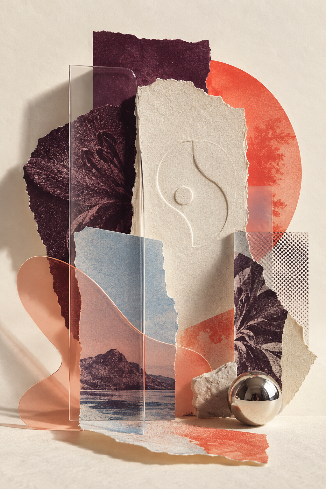
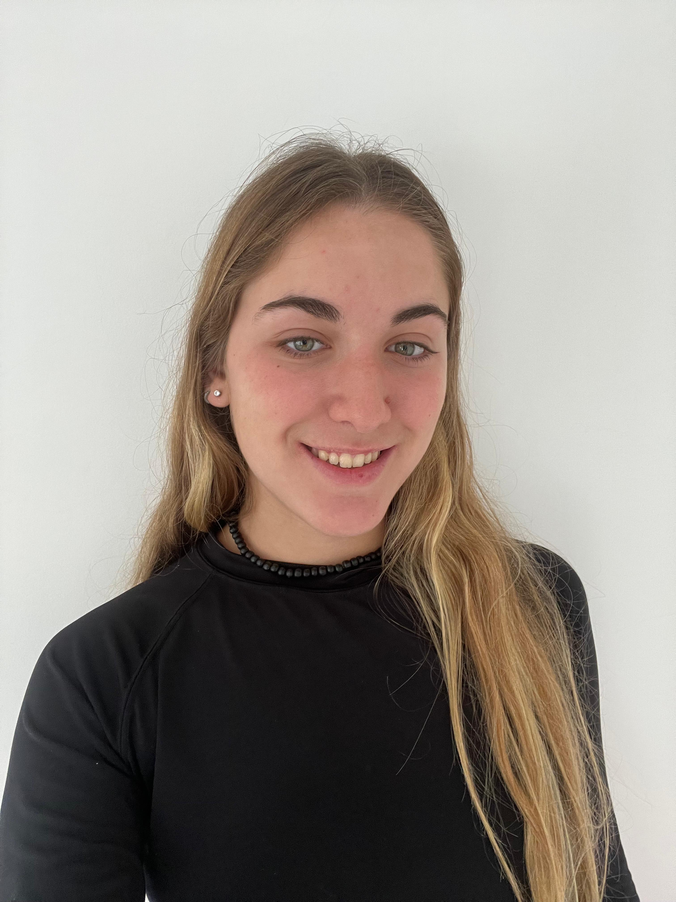

Abrir caso ↗
Abrir caso ↗
Diseño gráfico / Buenos Aires / 2026
Diseño que
deja huella.
01—
Creo identidades visuales que transforman una idea en un universo reconocible, claro y con carácter.
↓IDENTIDAD VISUAL ✳ EDITORIAL ✳ SEÑALÉTICA ✳ EXPERIENCIAS DIGITALES ✳ IDENTIDAD VISUAL ✳ EDITORIAL ✳
Selección de obra
Proyectos
con pulso propio.
Cada proyecto nace de una pregunta distinta. El resultado: sistemas visuales que cuentan algo antes de decir una palabra.
Abrir caso ↗
Museo
en movimiento
Un sistema de orientación que acompaña el recorrido, pone el arte al alcance y convierte cada decisión en una señal clara.
 Abrir caso ↗
Abrir caso ↗
También en movimiento
Una práctica que
sale del escritorio.
BKINA
Fundadora y diseñadora de marca. Identidad, dirección visual, contenido y posicionamiento para una marca propia de bikinis.
Benares
Proyecto de rebranding: una identidad renovada y aplicaciones gráficas diseñadas para una marca con nueva energía.
Club San Fernando
Fotografía deportiva: producción, selección y revelado de imágenes para contar el pulso del equipo.

Sobre la diseñadora
Diseñar es
dar forma
a una intención.
Soy Violeta Pía, diseñadora gráfica graduada en la Universidad de Palermo. Me interesa el diseño que escucha, que ordena y que hace que una marca se sienta imposible de confundir.
Combino mirada estratégica, sensibilidad tipográfica y una obsesión sana por los detalles para construir identidades, posicionamiento de marca y contenido digital que funcionan en el mundo real.
- Illustrator
- Photoshop
- InDesign
- Figma
- Canva
- Inglés intermedio
¿Pensamos algo juntas?